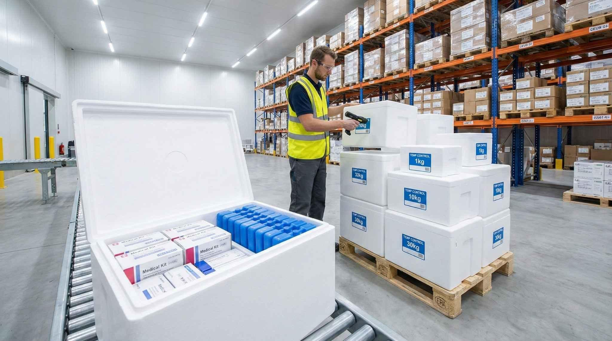
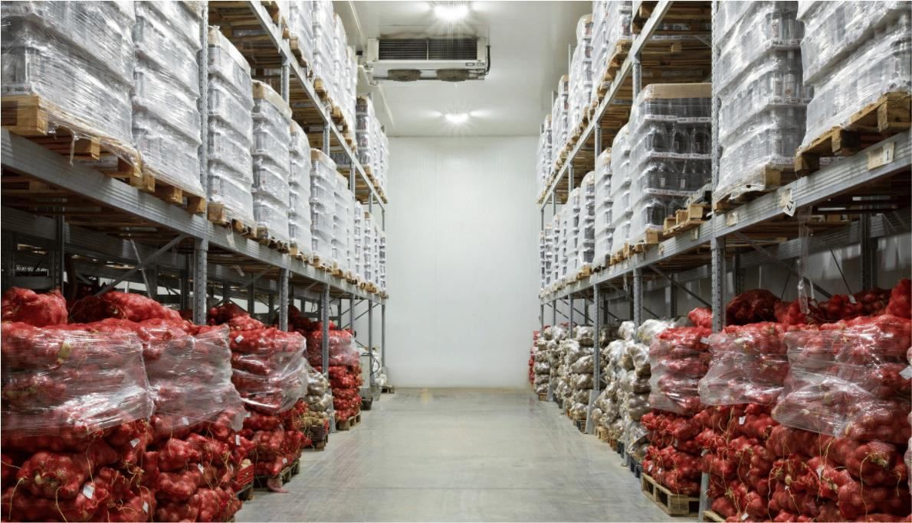
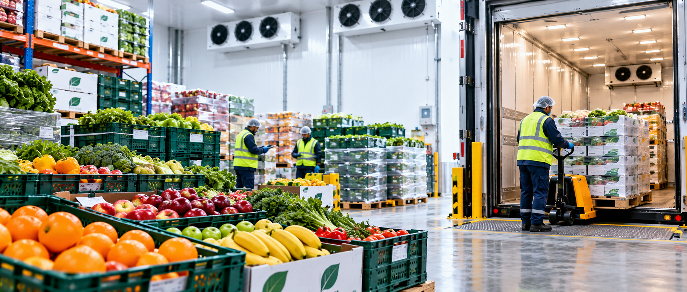
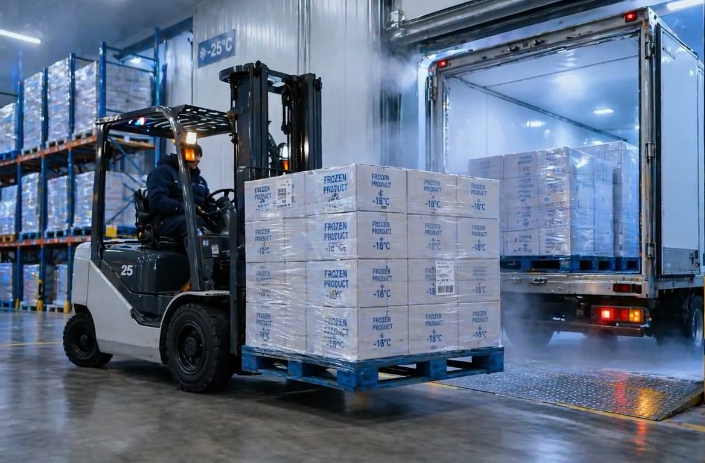
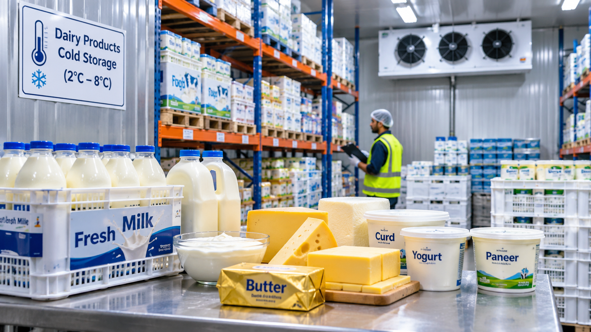

Pharmaceutical Logistics
Temperature-sensitive medicines and healthcare cargo.
- Temperature-sensitive medicine transportation
- Storage requirement planning
- Product-specific handling requirements
- Shipment coordination and documentation
- Delivery planning

SAVE AS: pharmaceutical-cargo.jpg
SAVE AS: agricultural-produce.jpgAgricultural Produce
Moving harvested produce from farm to market.
- Harvested produce transportation
- Post-harvest logistics planning
- Storage and handling coordination
- Farm-to-market movement
- Condition and transit-time considerations
Fruits & Vegetables
Freshness-focused logistics for perishable produce.
- Fresh-produce transportation
- Handling and storage coordination
- Transit-time planning
- Distribution to markets and businesses

SAVE AS: fruits-and-vegetables.jpg
SAVE AS: frozen-foods.jpgFrozen Foods
Cold-chain coordination for frozen foods and temperature-sensitive frozen products.
- Frozen food transportation planning
- Frozen-storage requirement coordination
- Handling and dispatch planning for frozen products
- Transit-time and delivery-window coordination
- Product-specific temperature requirements
Dairy Products
Temperature-conscious logistics coordination for milk, cheese, butter, yoghurt and other dairy products.
- Chilled dairy transportation planning
- Refrigerated storage requirement coordination
- Product handling and dispatch planning
- Transit-time and delivery-window coordination
- Cold-chain requirements based on the product

ADD IMAGE: dairy-products.jpgCold chain planning process
Each product has its own requirements, so every plan starts with them.
Product brief
Product, temperature range and shelf-life needs.
Route & timing
Transit time, pickup and delivery windows.
Storage
Storage and handling requirements agreed.
Coordination
Documentation and hand-offs managed.
Review
Feedback to refine future shipments.
To be confirmed before launch: Surabi Organisation Private Limited must verify the capabilities, fleet, facilities and certifications described on this page. No operational capability is claimed here until confirmed.
Request a cold chain quote
Tell us about your cargo and timelines and our team will respond with a tailored proposal.